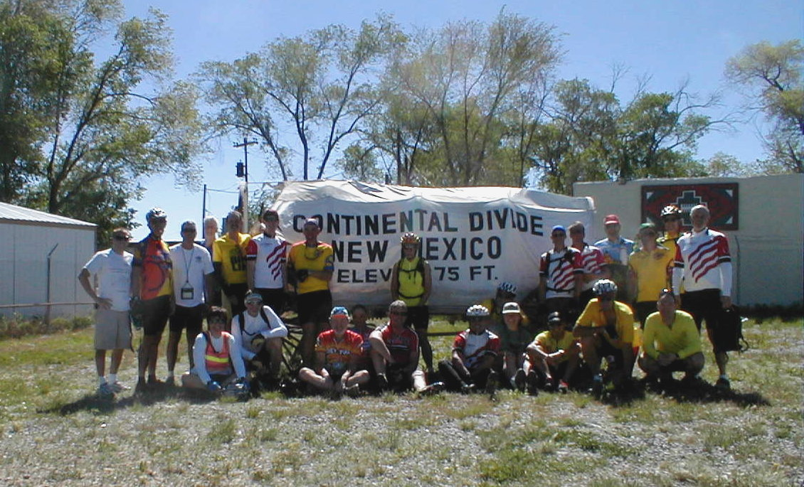

Day 11: May 23, Gallup, NM to Grants, NMPrevious Day - Home - Next Day Photo of the DayThe group (most of it) at the Continental Divide. Keegan's LogDay 11: May 23, Gallup, NM to Grants, NM Mileage: 71.00 milesWeather: 60-80 degrees, Sunny, wind from the north Vertical Climb: 1000 feet Riding Time: 4.5 hours Today began with no night flats, for the first time in four days. It was cold this morning, only 50 degrees when we rode our bikes to breakfast. We turned out of the hotel onto Route 66, which we followed for almost the entire day, and rode through the town of Gallup. About 12 miles outside of town we passed Red Rocks State Park, the cliffs of red rocks to the north made for a nice backdrop which would follow us for much of the day. Much of the morning was a long, slow climb to the highest altitude of the tour, 7,275 feet. The first rest stop was conveniently located right along the continental divide, the dividing line at which water travels to opposite oceans. We stopped to rest for a while, then took some photos of the group at the top of the divide. We have now left the Pacific behind and are now on our way to the Atlantic, passing a major milestone on the tour. The winds played tricks on us in the stretch from the sag to Grants. We left the sag with a tailwind, which quickly turned to a headwind after a few miles. Luckily we were again granted a tailwind as we neared the town of Grants, which helped to make the cruising a lot easier. We were in no hurry so we stopped about 10 miles out of town at a Dairy Queen for a quick snack. We continued on to Grants for lunch, looking for the Uranium Café. We did find the restaurant, we placed our orders just after 1:00, and got our food just after 2:00. Despite the somewhat lethargic service, the food was good, I had never eaten a burger with mayonnaise. The hotel was only a few miles from the café, so the remainder of the ride went very quickly. Pat, the tour mechanic, gave a bicycle maintenance seminar in the atrium of the hotel this afternoon, which was attended by nearly all of the tour riders. The pro shop also made a rare appearance, which gave me a chance to buy the CrossRoads hat I've been hoping for. Dinner was great, the convenience of a buffet dinner in the hotel can't be beat. Tomorrow it's off (and up) to Albuquerque, I'll write again from the top... Phil's LogI discovered on my little handlebar radio Navajo station KCNN, AM 660. Advertisements were in English, but the commentary was all in Navajo. Fun listening, I'm curious to see if I can get them on Web radio after the ride, if I survive that long. Today was a relatively easy day at 71 miles. We climbed for the first half to cross the Continental Divide (see Keegan's website for a group photo), then it was gentle more downhill than not into Grants. At Therese's suggestion, we stopped at the Uranium Cafe as we rolled into town, but it was disappointing and slow. I visited the Uranium Mining Museum which reminded me of the tungsten mine that my Dad took me to when he negotiated labor contracts between Union Carbide and the United Mine workers. Keegan went to the library. A s I said, it was an easy day; tomorrow we climb to Albuquerque. Keegan and I had dinner with Pat, the Kiwi bicycle mechanic, and with Chuck Brumley. I met Chuck on the group e-mails and we became instant friends when I added to an open note "QRZ DE WE7A", ham radio talk for "are there any hams out there". He responded as KB2E. Yes, we spoke on 75 meters, but had more time at dinner tonight. Chuck and his wife Karen are both tour riders from Saranac lake, near Lake Placid, New York. Chuck has been a bicycle rider since a kid, and qualified for the US Bicycle Nationals in 1967. He and Karen ride mountain bikes while at home, and did most of their "training" for this ride on snowy roads. Chuck has several pursuits in real life. With Karen, and often with a third friend George, they comprise the folk singing group Wood Heat. This is a summer activity, the tourist season in the Adirondacks. I asked their most popular song and Karen replied that the Louis Armstrong version of Wonderful World would be that. (I'll be stopping in pawnshops looking for a cheap acoustic guitar for Karen so the group can hear them play and sing.) Chuck plays banjo, bass violin, and harmonica. Karen gets to sing te pretty tunes, Chuck the nonsense ones. Chuck also has two books to his credit. "Guides of the Adirondacks - A History" is an extensive research work of the long list of guides since the early 1800's. More popular, and in its second printing is "Ripples From the Paddle", all stories of the Adirondacks of his invention. He added that there are four categories, "Gramps Stories (tall tales), "On the Edge" that maybe could be true, "Capers" (guys trying to get away with something), and "Affairs of the Adirondack Heart". I'll be ordering a copy, and if the work reflects Chuck, others might be interested. ($14.95 to Chuck Brumley, 32 Glenwood Road, Saranac Lake, New York 12983. Has Chuck ever shaved his full beard off? Once, when Karen promised that if he did, she would dye her hair green. She never did, and worse, made him turn away when addressing her until it grew back. And a note to their daughter Ellee, "Give Emily a bone." Albuquerque should be fun,, 76 miles away. Oh, and thanks for any prayers and wishes for my Achilles, it has done okay. Everyone in this bike trip is very pleasant, interesting, and a little unusual, present company excepted of course. I'll try to do some more interviews on the slower days. Thanks to all for reading, and to those that fire notes back. |
{kind=link}